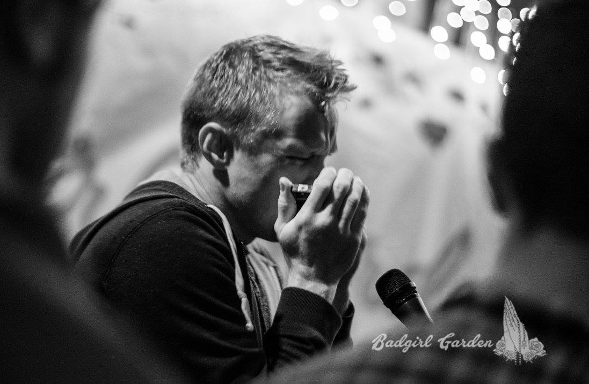

Testimonials
Take a look at what my clients say
From the design concept to ease of execution, this experience has been Phenomenal. No question was to silly or request to outrageous. Neil's professionalism is second to none. I can't thank you enough for how you have dealt with every single aspect of this design and i honestly could not be happier with the outcome. I can't wait to tell everyone i know to check out your work. I'm proud to display it and excited to see how it's received. Absolute best decision i ahve ever made. Thank you from the bottom of my heart. You are a master and have made my own work look even better.
- Simon Whicker, Sydney
Neil has a great understanding for game development. He was able to assist on many aspects of both games we developed. Highly valued asset.

- Skyna Productions. Perth
I was lucky enough to work alongside Neil and over conversation he mentioned he could build me a website for the start up BootCamp i was talking about and planning on launching. Not being very knowledgeable in the field it was something I have been meaning to look into but hadn't built up the mental energy or motivation to open that door. Neil not only took on the task with fantastic charisma but showed and informed me of what hed done and was about to do everystep of the way. It was effortless on my half and i now have what i need without having to lift a finger. I like that he has understood what my site is for and the requirements i need it to do and given it a great individual personalization with his unique style that aims to take you on a little journey thru the site and an all round better browsing experience.
- 
- Charlie Bateson, Sydney